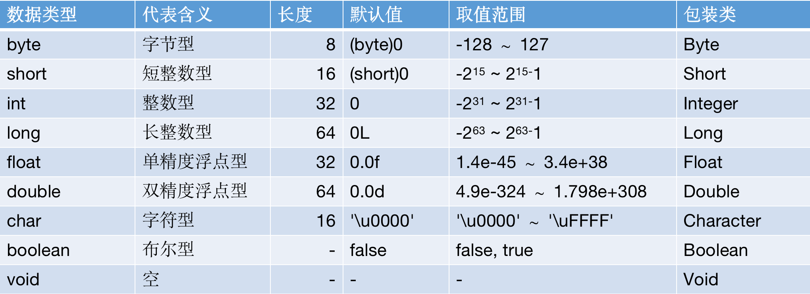

基本数据类型
Java 是一门面向对象的语言，一切都可以被视为对象。但基于工程上的考虑，Java 引入了8中基本类型，它们能够在执行效率以及内存使用上提升软件性能。
8种基本数据类型包括：
- 整数类型：
byte、short、int、long - 浮点类型：
float、double - 字符类型：
char - 布尔类型：
boolean

整数类型
- 整数用于表示没有小数部分的数值，允许负数。4 种整数类型：
byte、short、int、long，仅存储空间和表示的数据范围不同。 - 长整型数值有一个后缀 L，如：5000000000L
- 十六进制数值有一个前缀 0x，如：0x0F 表示15
- 八进制数值有一个前缀0，如：010 表示8
- 从 Java7 开始，使用0b前缀表示二进制数，而且还可以为数字加下划线，如：0b1111_0100_0010_0100_0000
// 下边赋值语句超过 short 的最大值 32767，程序在编译时就会报错
// short s1 = 32768;
// 数值计算时如果计算结果超长了，程序不会报任何错误，会给你一个错误的结果
Integer n1 = 2 * Integer.MAX_VALUE;
System.out.println(n1);
long n2 = 1000L;
System.out.println(n2);
int n3 = 0x0F;
System.out.println(n3);
int n4 = 010;
System.out.println(n4);
int n5 = 0b1_0001;
System.out.println(n5);
浮点类型
- 浮点类型用于表示有小数部分的数值。
- float类型的数值有一个后缀F，例如：3.14F
- 没有后缀的浮点数值默认为double，也可以使用后缀D，例如：3.14 或者 3.14D
- 浮点数值不适合用于禁止出现舍入误差的金融计算中，可以使用BigDecimal类等方案来代替
- 表示溢出和出错情况的三个特殊的浮点数值：
- 正无穷大，Double.POSITIVE_INFINITY
- 符无穷大，Double.NEGATIVE_INFINITY
- NaN（不是一个数字），Double.NaN，所有“非数值”的值都认为是不相同的
float f1 = 3;
float f2 = 3L;
float f3 = 3.14F;
// 下边赋值语句会报错，没有后缀的小数默认为 double 型，因此赋值给比它范围小的 float 会报错
// float f4 = 3.14;
double d1 = 3.14;
double d2 = 3.14D;
// F后缀为 float 类型，可以赋值给比它精度高的 double 类型
double d3 = 3.14F;
// 2.0 - 1.1 = 0.8999999999999999，而不是期望的 0.9
System.out.println(2.0 - 1.1);
// 3 * 0.1 = 0.30000000000000004，而不是期望的 0.3
System.out.println(3 * 0.1);
// 2 * 0.1 = 0.2，是期望的 0.2
System.out.println(2 * 0.1);
Double d4 = Double.MAX_VALUE * 2;
System.out.println(d4);
Double nan = Double.NaN;
System.out.println(nan == Double.NaN);
System.out.println(Double.isNaN(nan));
字符类型
- char 类型用于表示单个 Unicode 编码字符。Unicode 编码单元可以表示为十六进制值，其范围从\u0000到\uFFFF，其中
\u前缀是一个转义序列符，表示 Unicode 字符的编码。
char c1 = 'A';
char c2 = '\u0000';
char c3 = '\uFFFF';
char c4 = 65;
布尔类型
- boolean(布尔)类型有两个值：false 和 true，用来判定逻辑条件。
- 整型值和布尔值直接不能进行相互转换，这一点和其他语言不一样。
boolean b1 = false;
// 整型值和布尔值直接不能进行相互转换，所有下列语句会报错
// System.out.println(b1 == 1);
基本数据类型是线程安全的吗？
- 不是线程安全的，必须使用并发相关手段，才能保证线程安全。有线程安全的需要时可以使用 AtomicInteger、AtomicLong 这样的线程安全类。
- 像 float、double 这类比较宽的数据类型，它的更新操作都不是原子性的，可能出现程序读取到只更新了一半数据位的数值。